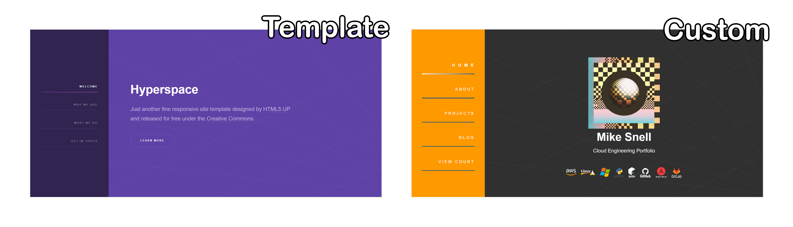
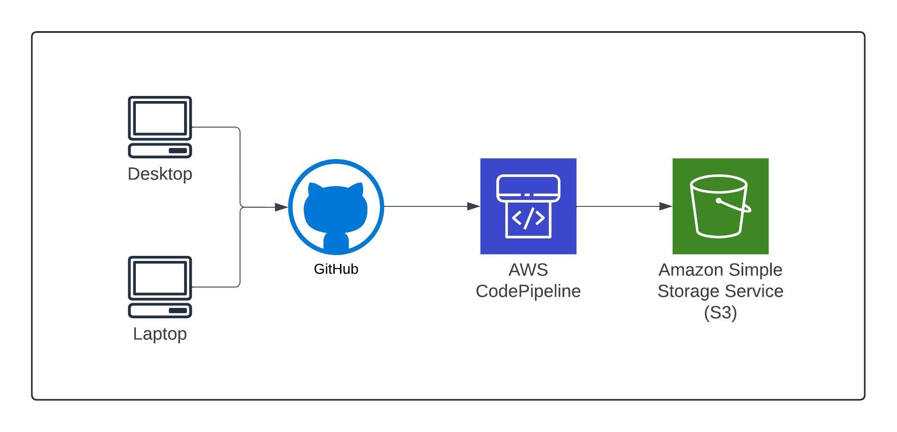

Inspired by the Cloud Resume Challenge created by Forrest Brazeal.
I would like to start off by saying that I am by no means a
professional web developer. With that in mind, I decided to
start with a template, reverse engineer it and then customize. I
got the template for this site from html5up.net and this
particular template is called "hyperspace". I spent more time on
this part of the project than I probably should have but what
can I say? Creative works are an outlet of mine. So, why not
give it the ol' razzle dazzle while I duct tape some things
together?

Link to template:
Hyperspace Template Demo by html5up.net
If you are curious about the artwork on the site (checkered orb
image, about me section background with the guy touching the
computer, the retro sun blog image and others) - they are some
of my creations. The perspective line artwork in the background
on the home section came with the hyperspace template.
From the beginning of this project, I knew I needed to use CI/CD
to make sure that the project remained efficient from a
management perspective right from the start. Since I work from 2
different machines (desktop and laptop while on the go), I
needed my files to remain current & consistent on both machines
as I developed the bones of this site and to have the middleman
in place for when I pushed it to S3 (more on that later). I
chose GitHub for this since I had already had some experience
using GitLab throughout my degree program recently and wanted to
take this opportunity to get more familiar with GitHub as well.
Once I had the foundation for the site laid out (main page, blog
page and this blogpost), I was ready to push the repository into
an S3 bucket. For this, I set up a codepipeline in AWS using you
guessed it... "AWS Codepipeline". This process is straight
forward as codepipeline has the ability to interact with GitHub
directly for the initial sync and listen for updates. With the
codepipeline set up, my repo was now placed in an S3 bucket and
maintains a 1 to 1 replica of my repo. Making it easy and
efficient to update my pages.

Any time I update my repo and push it to GitHub, AWS Codepiple
will pull it and update my S3 bucket which will be used as the
origin for cloudfront.